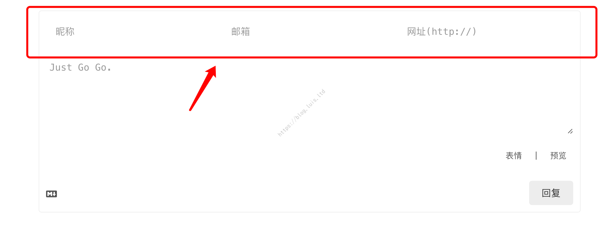

Hexo自定义-问题及方案
Hexo自定义-问题及方案
1. Low Severity Vulnerability
有时，在通过 npm install 或 npm install xxx 安装完包以后，终端会出现大致如下的信息：
1 | $ npm install |
提示“有一个低严重性的漏洞”，根据提示输入：
1 | $ npm audit fix |
很明显并没有用，反馈大致意思是「有 1 个漏洞需要人工检查，且无法更新」，使用强制修复试试：
1 | $ npm audit fix --force |
强制修复也无效，只好手动修复：
1 | $ npm audit |
这些信息似乎是和版本号有关，顺手打开给出来的网址：More info，看到如下信息：
果然给出的解决方案也是升级 marked 版本到 0.7.0，先看看当前的版本信息：
1 | $ npm ls marked |
（1）发现确实是因为旧版本的问题，所以先尝试更新后再次查看版本：
1 | $ npm update |
（2）发现无法手动更新，那就手动把这个 Blog/node_modules/marked 目录删掉：
1 | $ npm ls marked |
（3）提示依赖包 marked 被删除了，然后再重新安装：
1 | $ npm install |
（4）仍然是 0.6.3 版本！内心是崩溃的，干脆直接覆盖安装一次 marked，再查看版本信息。执行：
1 | $ npm install --save marked |
（5）现在问题来了，从层级结构上来看，手动执行安装后 Hexo 装了两个 marked，手动安装的这个 marked 是最新的 0.7.0 版本，被放在了原来老版本的目录下：Blog/node_modules/marked，而原本隶属于 hexo-renderer-marked 下面的老版本依赖包，由于被 hexo-renderer-marked 依赖，且手动安装了另一版本，导致其位置被自动放到：Blog/node_modules/hexo-renderer-marked/node_modules/marked 目录下。
也就是说，这个老版本的 marked，其版本并不是由站点主目录管理的，所以 update 和 删掉重新 install 都无法更新，而手动安装的 marked 是直接由站点主目录管理的，因此默认会安装最新版。这也说明被依赖的 marked 的版本号是在 hexo-renderer-marked 渲染引擎中控制的。
（6）为了防止冲突，先卸载手动安装的 marked：
1 | $ npm uninstall --save marked |
现在 Blog/node_modules/ 下已经没有 marked 目录了，同时也手动删掉老版本的 marked 目录：Blog/node_modules/hexo-renderer-marked/node_modules/marked。
（7）然后 再到之前的网页：点击这里 内点击 Versions 栏查看最新的 marked 版本：

（8）接着找到 Blog/node_modules/hexo-renderer-marked/package.json，修改其中的依赖部分：
1 | "dependencies": { |
把 "marked" 字段后面的 "^0.6.1" 强制改为 "^0.7.0"，，最后再次执行：
1 | $ npm install |
看到这个结果说明已经没有报“低严重性漏洞”了，再查看一下版本号，发现成功更新到 0.7.0 版本：
1 | $ npm ls marked |
假如执行这两步的时候依然报之前的信息，如果可以确保之前的步骤都是对的，可以暂时不管，通常是缓存信息还没有更新的缘故，把这两步执行完之后，退出并重新打开终端再查看
npm ls marked即可看到已经更新。假如出现错误信息显示被删除，再执行一次npm install即可。由于已经卸载了之前手动安装的 marked，因此这个依赖包的位置又回到了：
Site/node_modules/marked下。
2. FontAwesome不显示
某些情况下，在构建博客后，会出现图标不显示的问题，同时在页面上检查元素会出现一个报错信息：
原因是没找到目录下 FontAwesome 的 CSS 文件，但其实并不需要手动下载，Next 主题在生成部署时会动态到 FontAwesome 网站上下载相关样式，这时就考虑可能是 FontAwesome 的某个 CDN 连接挂了，可以在 Next 的主题配置文件 next/_config.yml 中切换一下：
1 | # Internal version: 4.6.2 |
重新部署，恢复正常。
3. Valine评论
Valine 评论和 LeanCloud 阅读统计同时开启会有冲突（2019-12-04 无意间发现已经不会冲突了），解决方案是关掉 LeanCloud 独立的阅读统计，并在 Valine 设置项中开启统计功能即可，Valine 设置如下：
1 | valine: |
3.1 Valine支持邮箱信息
默认情况下 Valine 只支持用户输入昵称评论，不能自己输入邮箱、网址等等，效果如下：

而官网提供的评论框可以同时输入昵称、邮箱、链接：

通过查看官网的配置信息，以及查看了 Next 主题源码之后发现是 Next 源码直接限制了只能输入昵称。找到 next/layout/_third-party/comments/valine.swig：
1 | <script> |
重点：
1 | guest_info:['nick'] , //评论者只需要提供评论的昵称即可 |
也就是这里写死了只能输入昵称，到底是否需要设置其他信息可以自行决定。在 NexT 主题配置文件中 Valine 有这么个配置项：
1 | guest_info: nick,mail,link # custom comment header |
这个属性对应在源码 next/layout/_third-party/comments/valine.swig 中传递给了：
1 | var guest = '{{ theme.valine.guest_info }}'; |
这段代码的作用也就是从主体配置文件中获取 guest_info 属性，然后以 ‘,’ 分隔开，再从 ['nick', 'mail', 'link'] 中分别获取对应的字符串并组成数组，然后传给 meta。查看 Valine 官网资料可知，这个 meta 属性是 LeanCloud 存储评论的头部信息，这里定义几个属性，在 Valine 写入 LeanCloud 存储时，就会写入几个属性。
3.1.1 直接修改写入属性
如果希望输入框有几个属性，Valine 就固定向 LeanCloud 存储几个属性，则可以简单添加其他信息：
1 | // 将 guest_info 重新赋值为 guest 遍历到的所有属性，否则默认只有上面 JS 中定义的 guest_info:['nick'] |
3.1.2 自定义存储信息
如果希望评论时读者写入的属性和实际存储到 LeanCloud 中的属性不一致，例如读者评论时只需要填写：昵称、邮箱，但 Valine 实际上存储时会存储：昵称、邮箱、链接，这样的好处是如果未来有一天新增了链接属性，原有的统计表不需要扩展，则需要自定义一个属性。首先在主题配置文件的 Valine 设置部分添加一个自定义属性（命名可自定义）：
1 | valine: |
然后在 Next 的 Valine 部署源码 next/layout/_third-party/comments/valine.swig 中修改这一部分：
1 | var GUEST = ['nick', 'mail', 'link']; |
主要就是获取主题配置文件中设置的 guest_header 然后组合成数组再传给 guest_info 即可。重新部署，效果如下：

3.2 隐藏Valine系统信息
常规配置好 Valine 后，会发现评论时自动读取了用户的系统信息等不太美观：

想要隐藏系统信息可修改 next/source/css/_custom/custom.styl，在末尾添加如下代码：
1 | // Valine 隐藏系统信息 |
custom.styl这个文件会在next/source/css/main.styl中被引入：
1 | // Custom Layer |
隐藏后的效果：
4. 本地搜索框
在使用搜索功能时，有时可能会遇到：点击搜索后一直处于加载中的状态，无法正确显示搜索框；点击搜索后不弹出搜索框或搜索框无法点击输入等，可以按照以下内容排查。
4.1 搜索Json格式不对
老版本的 Hexo 站点，记录搜索内容的文件是 search.xml，但新版本改为了 search.json，如果使用新版 Hexo 但参考旧版本的文章配置，可能导致无法解析搜索内容：
1 | # The following content is not recommended to modify |
该文件的实际路径为：url/search.json，直接访问这个链接如果可以正确显示 Json 内容，则说明文件生成正常，生成目录为 site/public/search.json。
4.2 特殊字符问题
有一个特殊字符 \u8 会导致本地搜索无法正常编码。
（1）如果直接访问网站的本地搜索载体页（直接在首页网址后面接上 /search.json）如果能正常显示出很多文字就说明没有特殊字符：
（2）否则会出现报错，由于我无法重现，因此从 这篇文章（作者：国光）内找了一个图片：
Sublime Text3 和 VS Code 都可以看到这个字符，因此可以使用这两个编辑器查看并删除字符。
4.3 不显示搜索结果
如果已经开启搜索功能，直接进入搜索内容文件 xxx.github.io/search.json 也能打开并且没有异常，搜索框可以正确弹出，但是无论你搜索什么内容，下面的搜索结果栏都是空白的：
这种情况很可能是因为某一篇文章没有标题。例如这个网站首页有一个置顶的通知栏，是通过设置 header: false 隐藏的标题，但在这篇文章依然需要设置 title 属性，否则就会导致无法搜索。
4.4 搜索框显示异常
如果发现点击搜索后，博客页面有变暗的效果、但搜索框根本显示不出来也没有加载中的图标（Safari），或者能显示出来但无法获取焦点、无法输入文字（Chrome），就像这样：
出现这个情况的，很可能博客个性化比较丰富，很大可能是因为自己调整了博客整体的透明度，也就是修改了这个文件：next/source/css/_custom/custom.styl：
1 | // 修改主体透明度 |
网上有不少 DIY 的文章里面都有提到，给博客加了一个自定义的背景图片以后，为了让博客具有一定的半透明效果给整体设置一个透明度。
但是由于 Next 主题中，搜索是基于固定侧栏（也就是 header-inner）的一个弹窗 Popup，而 opacity 这个属性设置的是整个界面控件的不透明度，所以会导致弹窗的绘制在后，使得弹窗被覆盖在了博客显示界面的底下。
如果既想保留搜索功能还想要带点不透明度，可以换一个透明度方案，从直接设置控件的透明度改为给背景设置一个本身带有透明度的 ARGB 颜色：
1 | // 注意修改的是 header-inner 部分 |
5. LaTeX转义问题
Hexo 的渲染引擎会自动转义部分特殊字符，但在 LaTeX 公式中这部分不应该被转义，问题详情可参考：Hexo下mathjax的转义问题。
目前网上普遍的做法是更换渲染引擎，老版本的 Hexo 尚不清楚，不过目前 hexo: 3.9.0 hexo-cli: 2.0.0 原生渲染引擎 hexo-renderer-marked 已经支持 LaTeX 了，如果更换为 hexo-renderer-kramed，会遇到的一个很 X 蛋的事是和各种 Html 标签冲突，比如 <center> 之类的，甚至 MarkDown 的原生图片语法  都会被转义，通常还会建议修改渲染的语法，跳过指定的符号，因此可以直接修改默认的 marked 引擎的语法，默认在：Blog/node_modules/marked/lib/marked.js，如果有手动另外安装过 marked，则修改：Blog/node_modules/hexo-renderer-marked/node_modules/marked/lib/marked.js：
1 | var inline = { |
最新版本的 hexo-renderer-marked@2.0.0^ 语法配置文件有修改，上述方法已不再适用，暂未找到修改方案，因此将 Marked 降级到了 0.7.0 版本。